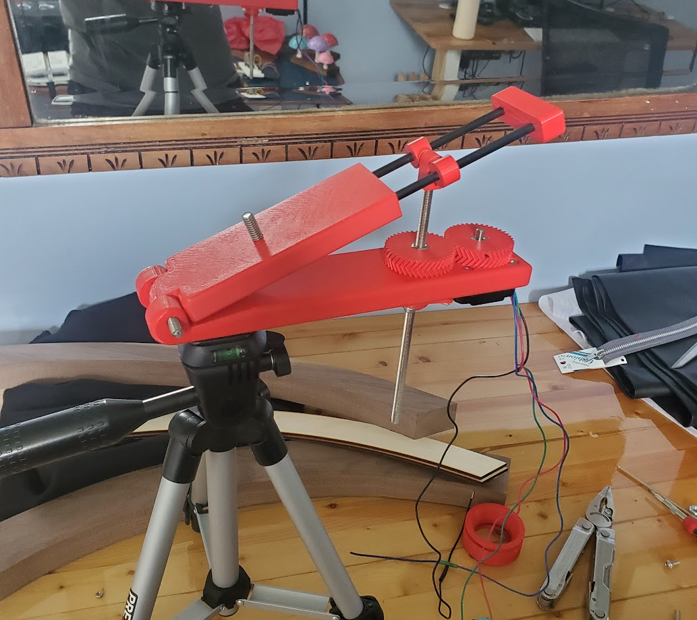
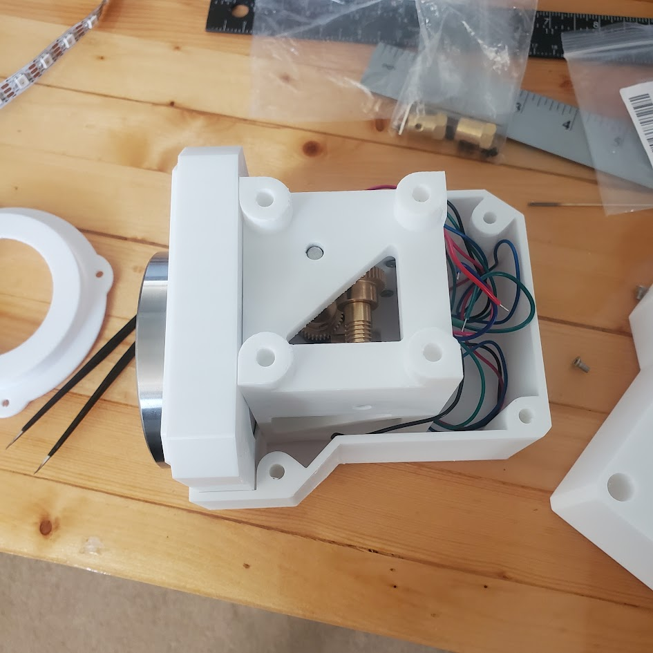
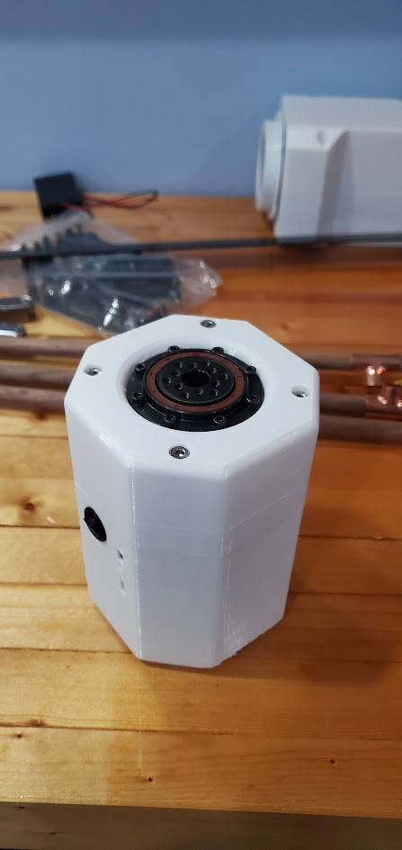
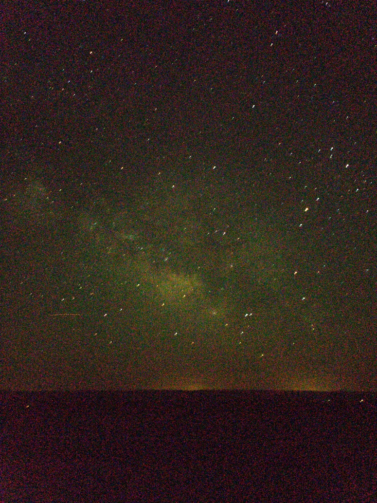

This project was a very impromptu and short notice idea. I was planning
to go to the Grand Canyon and realized that there was going to be a new
moon during that time. I had previously had some experience with night
photography and a star tracker would help with that. The concept behind
this design is that a camera is placed on the upper arm of the tracker
and then the pivot is pointed at the north star. This means that a
longer exposure photo can be taken without getting a streak from the
stars. This was accomplished by using a stepper motor that spins a
threaded rod which pushes on the upper arm and causes it to rotate.
Something that I did differently than many designs I saw online was to
make the threaded rod's attachment point move along the upper arm. This
meant that I could keep the angular velocity consistent throughout the
entire rotation.
Some of the issues that happened when
working on this design were how weak and flimsy it was. The tripod was
light, and aluminum, and the attachment point had play in it. This meant
that vibrations were plentiful and hard to get rid of. Another issue was
the speed of the motor. I found out while working on this that stepper
motors cannot be driven at extremely slow speeds. This was difficult and
an issue, but it can be solved with a larger gear reduction.


